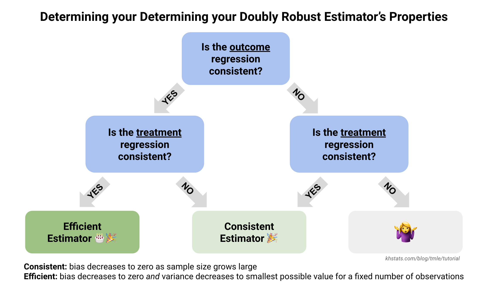

The is the third and final post in a three-part series to help beginners and/or visual learners understand Targeted Maximum Likelihood Estimation (TMLE). In this section, I discuss more statistical properties of TMLE, offer a brief explanation for the theory behind TMLE, and provide resources for learning more.
Properties of TMLE 📈
To reiterate a point from Parts I and II, a main motivation for TMLE is that it allows the use of machine learning algorithms while still yielding asymptotic properties for inference. This is notably not true for many estimators.
For example, in Part II we walked through TMLE for the Average Treatment Effect (ATE). Two frequently used alternatives to estimating the ATE are G-computation and Inverse Probability of Treatment Weighting (see Part II, Step 1 and references). In general, neither yield valid standard errors unless a-priori specified parametric models are used, and this reliance on parametric assumptions can bias results. There are many simulation studies that show this.
Another beneficial property of TMLE is that it is a doubly robust estimator. This means that if either the regression to estimate the expected outcome, or the regression to estimate the probability of treatment, are correctly specified (formally, their bias goes to zero as sample size grows large, meaning they are consistent), the final TMLE estimate will be consistent.
If both regressions are consistent, the final estimate will reach the smallest possible variance at a rate of \(\sqrt{n}\), which is the fastest possible rate of convergence and equivalent to parametric maximum likelihood estimation. The reason we use superlearning for estimating the outcome and treatment regressions is to give us the best possible chance of having two correctly specified models and obtaining an efficient estimate.

Even among other doubly robust estimators, TMLE is appealing because its estimates will always stay within the bounds of the original outcome. This is because it is part of a class of substitution estimators. There is another class of doubly robust, semiparametric estimation methods frequently used in causal inference that are referred to as one-step estimators, but they can sometimes yield final estimates that are outside the original outcome scale. The one-step estimator for the ATE is called Augmented Inverse Probability Weighting (AIPW).
Why does TMLE work? ✨
Truly understanding why TMLE works requires semiparametric theory that falls far outside the scope of this tutorial. However, the theory is interesting, so I’ll give a brief, high-level explanation, and then you can look at the references if you’re curious to learn more. Importantly, the explanation I outline here is more than sufficient and certainly not necessary to appropriately implement TMLE as an analyst.
TMLE relies on the following ideas:
Some estimands allow for asymptotically linear estimation. This means that estimators can be represented as sample averages (plus a term that converges to zero).
The quantities being averaged for asymptotically linear estimators are called influence functions. An influence function is a function that quantifies how much influence each observation has on the estimator. For this reason, it is very useful to characterize the variance of the estimator. In parametric maximum likelihood estimation, the influence function is related the score function.
The efficient influence function (EIF) is the influence function that achieves the efficiency bound (think Cramer Rao Lower Bound from parametric maximum likelihood estimation) and can be used to create efficient estimators.
If we want to construct an estimator that is efficient, we can take advantage of the EIF to endow the estimator with useful asymptotic properties.
This is the reason TMLE allows us to use machine learning models “under the hood” while still obtaining asymptotic properties for inference: our estimand of interest admits asymptotically linear estimation, and we are using properties of the EIF to construct an estimator with optimal statistical properties (e.g. double robustness).
Resources to learn more
I could only cover so much in this post, but here are the resources I’ve used the most to learn about TMLE, semiparametric estimation, and causal inference. If you are new to any or all of it, there is a good chance it will take several reads of these materials before the concepts begin to make any sense. Don’t get discouraged!
TMLE
The paper I referred to most often while learning TMLE was Targeted Maximum Likelihood Estimation for Causal Inference in Observational Studies by Megan S. Schuler and Sherri Rose. It has a nice step-by-step written explanation and details the statistical advantages of TMLE for an applied thinker.
I also really like the written explanations in the Targeted Learning book (Chapters 4 and 5) by Mark van der Laan and Sherri Rose. The notation was often too difficult for me to follow, but the words themselves make a lot of sense.
Miguel Angel Luque-Fernandez wrote an excellent bookdown tutorial on TMLE, also with step-by-step
Rcode. It is more technical and thorough than my post, but still aimed at an applied audience. He also has a tutorial on the functional delta method which is part of the theory behind the way we compute the standard errors (see Part II, Step 6).Other code-based web-based tutorials on TMLE that are more recent (or recently discovered by me!) include:
David Benkeser and Antoine Chambaz’ A Ride in Targeted Learning Territory
The authors of the
Rpackage suitetlverse’s Hitchhiker’s Guide to Targeted Learning: The TMLE Framework.Stitch Fix’s Jasmine Nettiksimmons AND Molly Davies’ blog post: “Gimme a robust estimator - and make it a double!”
Semiparametric Theory and Influence Functions
Edward Kennedy has several well-written pieces on semiparametric estimation in causal inference. I recommend starting with:
His introductory paper on Semiparametric Theory
His slideshow tutorial Nonparametric efficiency theory and machine learning in causal inference
My favorite resource so far for learning specifically about influence functions has been Visually Communicating Influence Functions by Aaron Fisher and Edward Kennedy. However, this paper didn’t make sense to me until I worked through this interactive tutorial by Herb Susmann. I suggest playing around with the interactive examples first, and then trying to work through the paper.
Additonal walkthroughs to learn about EIFs include the following:
Alejandro Schuler’s Modern Causal Inference online book which includes a section on deriving EIFs. His tutorial is a similar, shorter version of the next two resources:
Oliver Hines et al.’s Demystifying statistical learning based on efficient influence functions
Edward Kennedy’s comprehensive review Semiparametric Doubly Robust Targeted Double Machine Learning: A Review
Although I did not personally use these last few when I was initially learning about EIFs (since they came out after I wrote this post in Fall 2020), they seem like great resources and intended to be approachable for beginner-to-intermediate learners.
Causal Inference
As emphasized in Part I, TMLE is an estimation technique which can be used for causal inference. If you want to learn about the foundations of causal inference, I suggest two different introductory texts below. Note that these provide fairly different frameworks (notation, descriptions of assumptions) to reach the same conclusions, but both provide useful perspectives.
Causal Inference in Statistics: A Primer by Judea Pearl. Pearl does not discuss estimation methods, but rather focuses on the assumptions, or identification, side of causal inference. Thus, you will not find TMLE mentioned in this text.
What If by Miguel Hernan and James Robins. Notably, Hernan and Robins only discuss parametric estimation methods, so you will also not find TMLE or AIPW in this text.
I also think the introductory chapters of the previously mentioned Targeted Learning book (Chapters 1 and 2) do an excellent job of setting up the “roadmap” of causal inference.
I’ll continue to update this page with beginner’s resources as I discover them.
Feedback or clarifications on this post is welcome, either from the new learners of TMLE or experts in causal inference. The best way to reach me is through email.
Acknowledgements
This tutorial would not have been possible without my colleague Iván Díaz patiently answering many, many questions on TMLE. I am also very appreciative of Miguel Angel Luque-Fernandez’s helpful feedback on the visual guide.
Lastly, many thanks to Axel Martin, Nick Williams, Anjile An, Adam Peterson, Alan Wu, and Will Simmons for providing suggestions on various drafts of this art project!